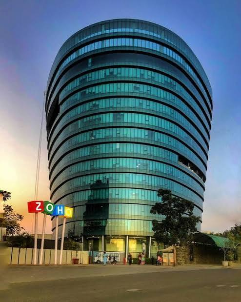
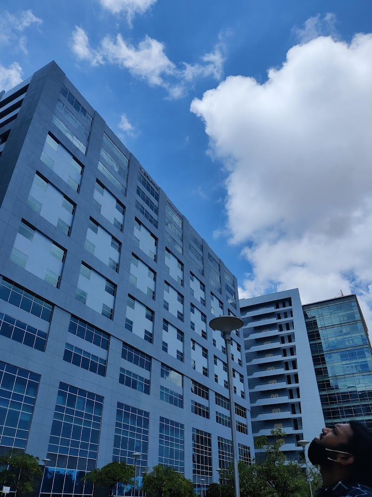
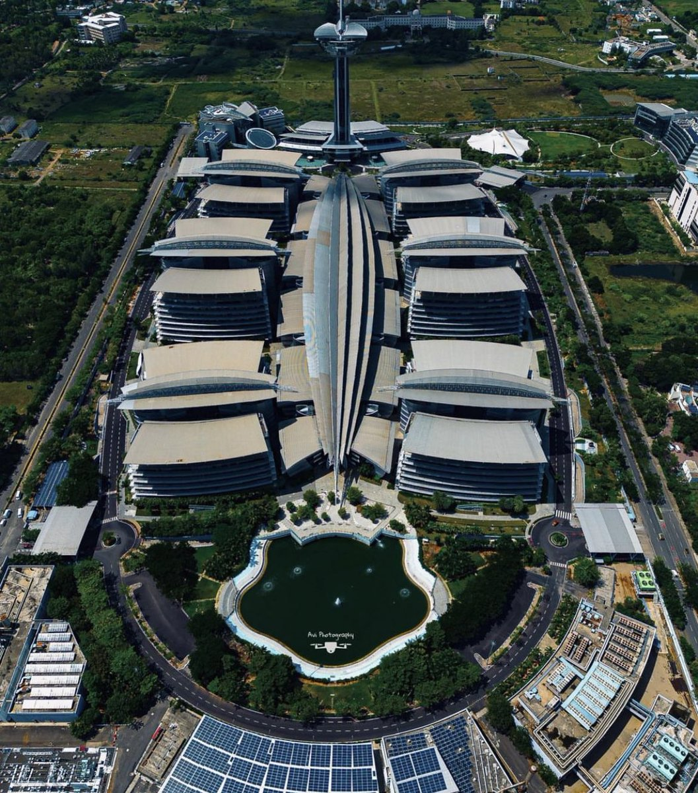

SOUTH INDIA'S IT HUB
SOFTWARE,PRODUCUT AND SERTICE BASED COMPANIESChennai IT Companies

Chennai is the capital city of Tamil Nadu and one of India's leading Information Technology (IT) hubs. It is known for its strong educational institutions, skilled workforce, and world-class IT infrastructure. Chennai is often called the "Gateway to South India" and has emerged as an important center for software development, SaaS, artificial intelligence, and Global Capability Centers (GCCs). The city's IT industry is concentrated mainly along the Old Mahabalipuram Road (OMR), popularly known as the IT Corridor. Major technology parks such as TIDEL Park and SIPCOT IT Park have attracted both Indian and multinational companies, creating thousands of employment opportunities every year.
Software-Based
ZOHO
|
 |
|
Product-Based
FRESHWORKS
|
 |
|
Service-Based
TATA CONSULTANCY SERVICE
|
 |
|
Help
- Zoho :Zoho_Support
- Freshworks :Freshworks_Support
- Tata-Consultancy Service :Tcs_support
Conatact
ZOHO Corporation’s primary Chennai office is located at Estancia IT Park, GST Road, Vallancheri, Chengalpattu District. You can reach their main corporate line toll-free at 1800 103 1123 or 1800 572 3535. For direct sales inquiries or support, email them at sales@zohocorp.com.
FRESHWORKSCompanies' primary Chennai office is located at Global Infocity, Block B, 40 MGR Road, Perungudi, Chennai 600096, India. For customer and general inquiries, contact their support line at +91 44-6667-8080 (available Monday–Friday, 9 AM to 5 PM) or email support@freshworks.com.
TCS in Chennai using these official contact channels TCS Contact Us:General Helpline & Careers: 1800-209-3111 (Toll-Free, available 9:30 AM to 6:00 PM) TCS Recruitment Fraud AlertGeneral & Marketing Email: india.marketing@tcs.comCareers Email: careers@tcs.com